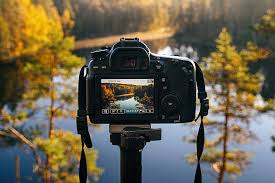

¿Por qué la fotografía?
La fotografía es una forma creativa de contar historias con luz, encuadre y paciencia. Ideal para practicar en cualquier lugar.
Explora composición, equipo y edición. Este sitio funciona con Service Worker.
La fotografía es una forma creativa de contar historias con luz, encuadre y paciencia. Ideal para practicar en cualquier lugar.